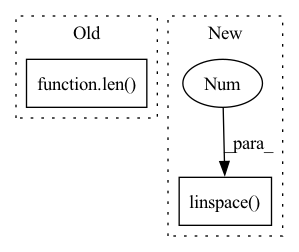

Pattern ID :24102
Before Change
break
if loss.detach().cpu().item() > loss_schedule[curr_stage]:
curr_stage += 1
if curr_stage < len( lr_schedule) :
curr_lr = lr_schedule[curr_stage]
for g in optimizer.param_groups:
g["lr"] = curr_lrAfter Change
def train(network):
loss_schedule = np.linspace( 0.9, 0.99 , num=3)
curr_stage = 0
curr_lr = 1e-3
lr_history = []
history = []In pattern: SUPERPATTERN
Frequency: 4
Non-data size: 2
Instances Fragment ID: 74816017
Project Name: neurotorch/neurotorch
Commit Name: 1448822fbe5f5b55b9f4434da75c983e31f11bf8
Time: 2022-08-06
Author: 50332514+JeremieGince@users.noreply.github.com
File Name: applications/time_series_forecasting_spiking/ts_pred_with_lif_autoencoder.py
M Class Name: AnonimousClass
N Class Name: AnonimousClass
M Method Name: train(1)
N Method Name: train(1)
M Parent Class:
N Parent Class:
M File Name: applications/time_series_forecasting_spiking/ts_pred_with_lif_autoencoder.py
N File Name: applications/time_series_forecasting_spiking/ts_pred_with_lif_autoencoder.py
M Start Line: 119
M End Line: 148
N Start Line: 123
N End Line: 146
Before Change
self.eps = eps
self.n_anchors = n_anchors
self.strides = strides
self.grids = [torch.zeros(1)] * len( in_channels)
// Define criteria
self.l1_loss = nn.L1Loss(reduction="none")
self.bcewithlog_loss = nn.BCEWithLogitsLoss(reduction="none")After Change
self.use_dfl = use_dfl
self.reg_max = reg_max
self.proj = nn.Parameter(torch.linspace(0 , self.reg_max, self.reg_max + 1) , requires_grad=False)
self.iou_type = iou_type
self.varifocal_loss = VarifocalLoss().cuda()
self.bbox_loss = BboxLoss(self.num_classes, self.reg_max, self.use_dfl, self.iou_type).cuda() Fragment ID: 74816019
Project Name: meituan/yolov6
Commit Name: 49a80b1fdd025c9a326d0e4fea9825581dec00f4
Time: 2022-08-31
Author: lichuyi@meituan.com
File Name: yolov6/models/loss.py
M Class Name: ComputeLoss
N Class Name: ComputeLoss
M Method Name: __init__(11)
N Method Name: __init__(10)
M Parent Class:
N Parent Class:
M File Name: yolov6/models/loss.py
N File Name: yolov6/models/loss.py
M Start Line: 38
M End Line: 43
N Start Line: 27
N End Line: 49
Before Change
self.eps = eps
self.n_anchors = n_anchors
self.strides = strides
self.grids = [torch.zeros(1)] * len( in_channels)
// Define criteria
self.l1_loss = nn.L1Loss(reduction="none")
self.bcewithlog_loss = nn.BCEWithLogitsLoss(reduction="none")After Change
self.use_dfl = use_dfl
self.reg_max = reg_max
self.proj = nn.Parameter(torch.linspace(0 , self.reg_max, self.reg_max + 1) , requires_grad=False)
self.iou_type = iou_type
self.varifocal_loss = VarifocalLoss().cuda()
self.bbox_loss = BboxLoss(self.num_classes, self.reg_max, self.use_dfl, self.iou_type).cuda() Fragment ID: 74816018
Project Name: augmentedstartups/as-one
Commit Name: 6f2f010dcaf35105030dcf5c371d3d2f97c25d90
Time: 2022-09-16
Author: ajmair.kashif@axcelerate.ai
File Name: asone/detectors/yolov6/yolov6/models/loss.py
M Class Name: ComputeLoss
N Class Name: ComputeLoss
M Method Name: __init__(11)
N Method Name: __init__(10)
M Parent Class:
N Parent Class:
M File Name: asone/detectors/yolov6/yolov6/models/loss.py
N File Name: asone/detectors/yolov6/yolov6/models/loss.py
M Start Line: 38
M End Line: 43
N Start Line: 27
N End Line: 49
Before Change
class WeightSentencizer(Sentencizer):
def craft(self, raw_bytes: bytes, doc_id: int, *args, ** kwargs) -> List[Dict]:
results = super().craft(raw_bytes, doc_id)
if len( results) > 1:
results[0]["weight"] = 0.5
avg = 0.5 / (len(results) -1)
After Change
class WeightSentencizer(Sentencizer):
def craft(self, raw_bytes: bytes, doc_id: int, *args, ** kwargs) -> List[Dict]:
results = super().craft(raw_bytes, doc_id)
weights = np.linspace( 1, 0 , len(results))
for result, weight in zip(results, weights):
result["weight"] = weight
return results Fragment ID: 74816015
Project Name: jina-ai/examples
Commit Name: ce67d135189ee40a3c9ed02096723df07cadee93
Time: 2020-04-13
Author: xiong.ma@jina.ai
File Name: news-search/images/extractor/extractor.py
M Class Name: WeightSentencizer
N Class Name: WeightSentencizer
M Method Name: craft(3)
N Method Name: craft(3)
M Parent Class: Sentencizer
N Parent Class: Sentencizer
M File Name: news-search/images/extractor/extractor.py
N File Name: news-search/images/extractor/extractor.py
M Start Line: 9
M End Line: 17
N Start Line: 10
N End Line: 15